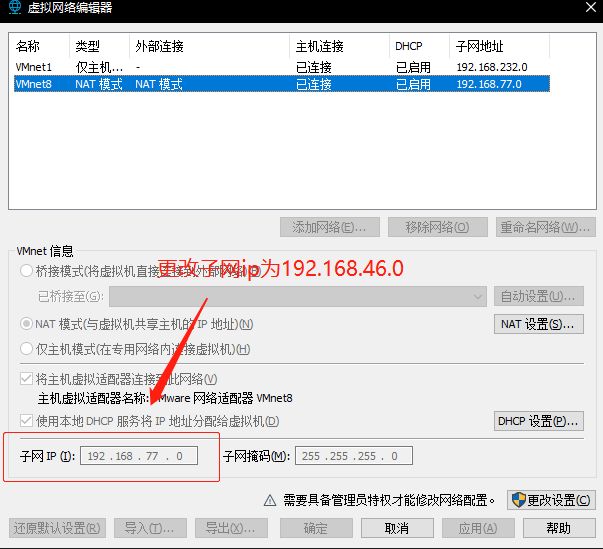
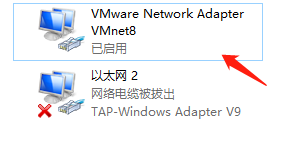
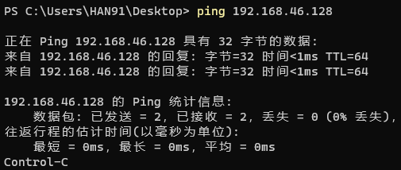
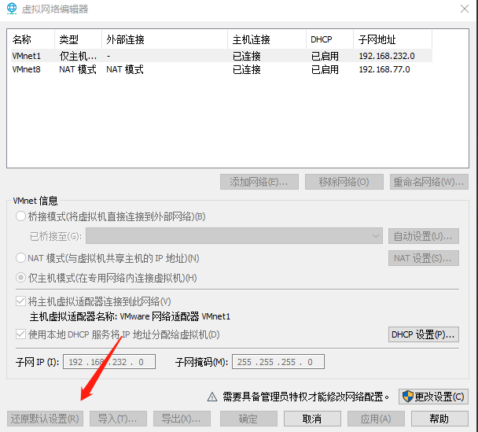
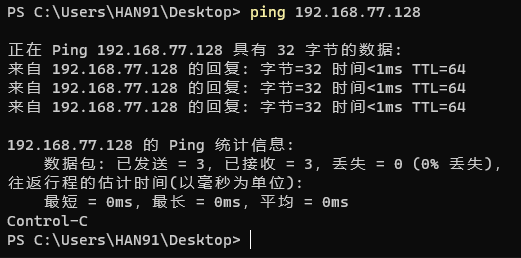
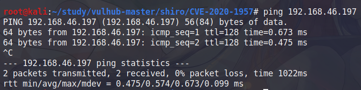

问题及解决记录
# Java
# debug，调试报错
更换 jdk8 后无法 debug，可以 run
1 | D:\语言环境\JDK8_32\bin\java.exe ... |
更换 idea 下载后的 jdk8 后解决问题，目测因为自己设置的 jdk 路径包含中文（out-of-ascii path）
# idea 重置插件
idea 无限重置方法
-
settings -> plugins -> 设置图标 -> Manage Repositories，添加：https://plugins.zhile.io
-
在插件市场搜索 IDE eval reset
# Linux
# 虚拟机物理机互 ping
# nat 模式物理机 ping 不通虚拟机
虚拟机 ip：192.168.163.128
物理机 ip：192.168.46.197
不在同一网段，更改虚拟机网卡配置为同一网段
编辑 -> 虚拟网络编辑器

然后 linux 下重启网卡 systemctl restart networking
获得虚拟机 ip：192.168.46.128
物理机还是 ping 不通的话，打开 控制面板\网络和 Internet\网络连接
我 nat 模式对应 VMnet8 网卡，右击禁用后再启动

物理机 ping 通虚拟机

# nat 模式虚拟机 ping 不通物理机
虚拟机 ip：192.168.163.128
物理机 ip：192.168.46.128
测试过不是防火墙的问题
和物理机同一网段
物理机可 ping 通虚拟机
打开 编辑 -> 虚拟网络编辑器，点击还原默认设置

此时发现虚拟机和物理机不是同一网段，但是可以互 ping
物理机 ping 虚拟机：

虚拟机 ping 物理机：
